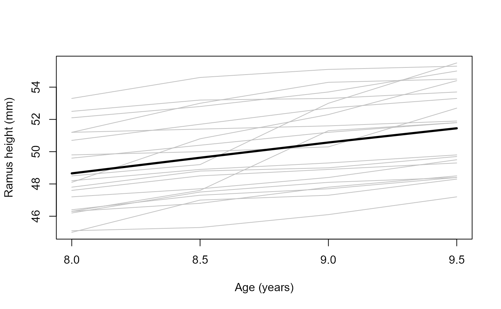
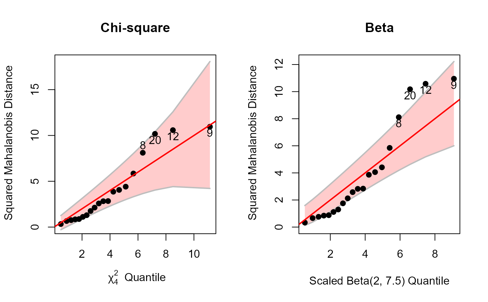
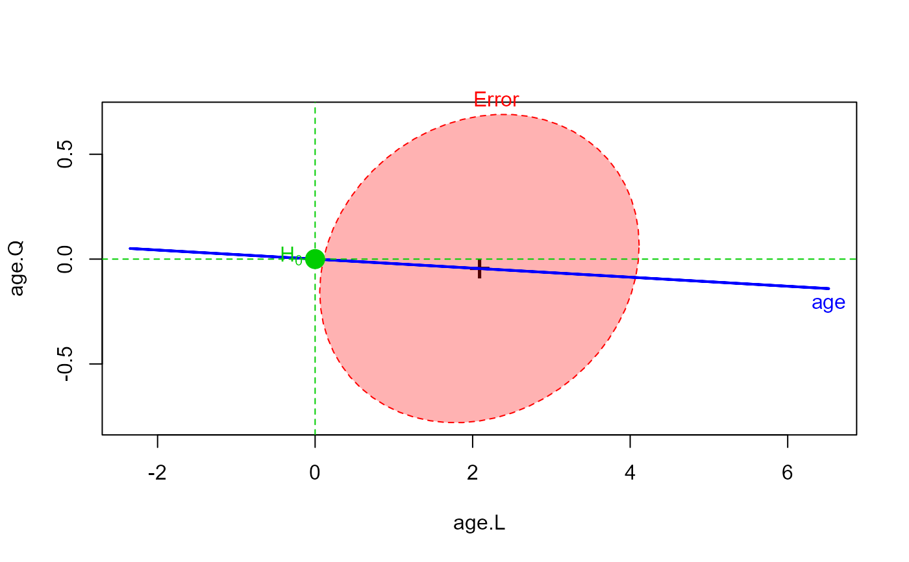

The height of the ramus (the vertical part of the lower jaw bone), in mm, measured on 20 boys at ages 8, 8.5, 9 and 9.5 years.
This is a classic small dataset for growth curves (repeated measures on a single
group), and for multivariate normality and outliers. With \(n = 20\) and
\(p = 4\), it shows how the \(\chi^2\) approximation to the distribution of
squared Mahalanobis distances can hide outliers that the exact beta distribution
reveals (see cqplot()).
Format
A data frame with 20 observations on the following 4 variables.
Age8: ramus height at 8 yearsAge8.5: at 8.5 yearsAge9: at 9 yearsAge9.5: at 9.5 years
Source
Rencher, A. C. & Christensen, W. F. (2012), Table 3.7, from the rencher package
(table3.7). Originally from Elston, R. C. & Grizzle, J. E. (1962). Estimation of
time-response curves and their confidence bands. Biometrics, 18, 148–159.
Details
Rencher & Christensen (2012, Example 4.6.2) use these data to look for multivariate outliers. No variable shows univariate outliers, but a beta Q-Q plot of the squared Mahalanobis distances \(D^2\) shows that three boys (9, 12, 20), and possibly a fourth (8), depart from multivariate normality. A test for a single outlier does not reject, because the three largest distances mask each other. Mardia's test of multivariate kurtosis is significant.
The values of \(D^2\) in their Table 4.1 differ slightly from those computed from these data, mostly for boys 7 and 10. The data here agree exactly with the printed Table 3.7, and their \(D^2\) sum to \((n-1)p = 76\), as they must, whereas those in Table 4.1 sum to 75.5.
For a repeated measures analysis, the four ages are equally spaced, so the default polynomial contrasts for an ordered factor give the linear, quadratic and cubic components of growth.
References
Rencher, A. C. & Christensen, W. F. (2012). Methods of Multivariate Analysis, 3rd ed. Hoboken, NJ: Wiley. Example 4.6.2; Problems 3.18–3.20.
Examples
data(Ramus)
ages <- c(8, 8.5, 9, 9.5)
# growth curves for each boy, and the mean
matplot(ages, t(Ramus), type = "l", lty = 1, col = "gray",
xlab = "Age (years)", ylab = "Ramus height (mm)")
lines(ages, colMeans(Ramus), lwd = 3)

# multivariate outliers: chi-square vs exact beta reference
op <- par(mfrow = c(1, 2))
cqplot(Ramus, id.n = 4, main = "Chi-square")
cqplot(Ramus, id.n = 4, dist = "beta", main = "Beta")

par(op)
# repeated measures: a single group, so only the intercept and age
idata <- data.frame(age = ordered(ages))
ramus.mod <- lm(cbind(Age8, Age8.5, Age9, Age9.5) ~ 1, data = Ramus)
car::Anova(ramus.mod, idata = idata, idesign = ~age, type = 3)
#>
#> Type III Repeated Measures MANOVA Tests: Pillai test statistic
#> Df test stat approx F num Df den Df Pr(>F)
#> (Intercept) 1 0.99763 8005.1 1 19 < 2.2e-16 ***
#> age 1 0.80729 23.7 3 17 2.607e-06 ***
#> ---
#> Signif. codes: 0 '***' 0.001 '**' 0.01 '*' 0.05 '.' 0.1 ' ' 1
# linear x quadratic components of growth
heplot(ramus.mod, idata = idata, idesign = ~age, iterm = "age",
variables = c("age.L", "age.Q"), fill = TRUE)
#> Note: model has only an intercept; equivalent type-III tests substituted.
